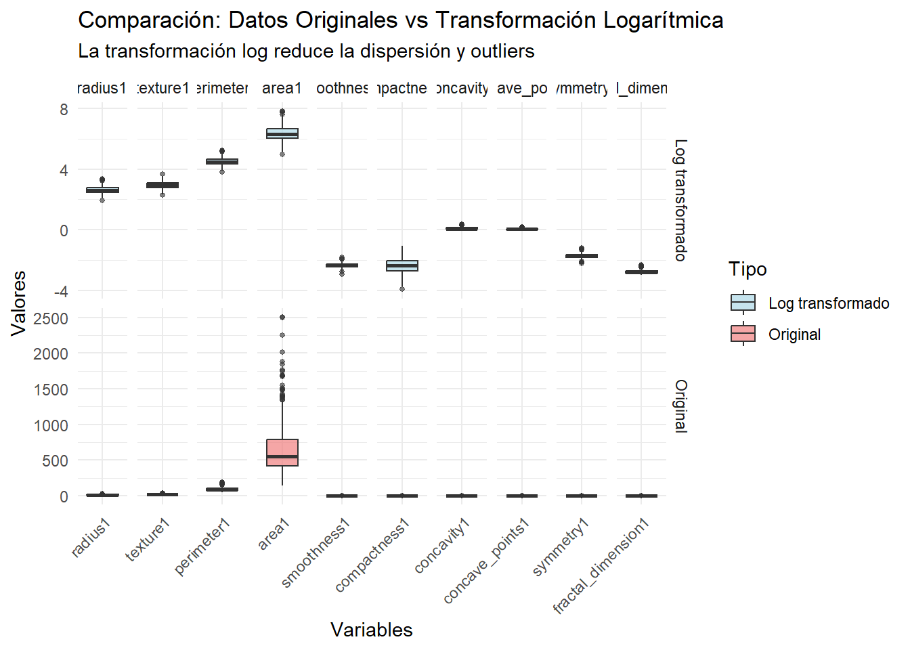

Chapter 4 Limpieza y optimización de los datos
4.1 Optimización de los datos
En el conjunto de datos de cáncer de mama, hemos identificado que múltiples variables representan mediciones redundantes de las mismas características nucleares subyacentes, donde cada atributo principal se expresa a través de tres variantes estadísticas: la media (sufijo 1), el error estándar (sufijo 2) y el valor máximo (sufijo 3). Esta estructura crea redundancia sustancial, ya que las versiones de error estándar y valores máximos son derivadas directamente de las mediciones medias y no aportan información independiente sobre nuevas características biológicas. Para optimizar los procesos analíticos, evitando multicolinealidad y reduciendo dimensionalidad sin pérdida de información esencial, utilizaremos exclusivamente las siguientes 10 variables de media (sufijo 1) como representantes canónicas de cada atributo nuclear:
Variables representativas seleccionadas:
- radius1 → Representa: radius1, radius2, radius3
- texture1 → Representa: texture1, texture2, texture3
- perimeter1 → Representa: perimeter1, perimeter2, perimeter3
- area1 → Representa: area1, area2, area3
- smoothness1 → Representa: smoothness1, smoothness2, smoothness3
- compactness1 → Representa: compactness1, compactness2, compactness3
- concavity1 → Representa: concavity1, concavity2, concavity3
- concave_points1 → Representa: concave_points1, concave_points2, concave_points3
- symmetry1 → Representa: symmetry1, symmetry2, symmetry3
- fractal_dimension1 → Representa: fractal_dimension1, fractal_dimension2, fractal_dimension3
Este enfoque estratégico reduce el espacio de características de 30 a 10 variables clave, preservando el 100% de las características morfológicas fundamentales mientras mejora significativamente la eficiencia computacional.
4.2 Limpieza de los datos
4.2.1 Valores faltantes
En este inciso revisaremos los valores faltantes que contiene nuestro subconjunto de datos y propondremos una solución a esta problemática

De manera casi milagrosa nuestro subconjunto de datos no presenta ningún tipo de valores faltantes. Por lo que no será necesario modificar nuestro subconjunto con ninguna técnica.
4.2.2 Valores Atípicos
En esta parte revisaremos aquellos valores atípicos que se pueden generar y le daremos un tratamiento adecuado para poder culminar
4.2.2.1 Revisión de las variables categóricas
## === VERIFICACIÓN DE ID (IDENTIFICADORES) ===## Total de observaciones: 569## IDs únicos: 569## ¿Hay IDs duplicados? NOif(length(unique(df$ID)) != nrow(df)) {
duplicados <- df$ID[duplicated(df$ID)]
cat("IDs duplicados:", unique(duplicados), "\n")
}
cat("\n=== VERIFICACIÓN DE Diagnosis (DIAGNÓSTICO) ===\n")##
## === VERIFICACIÓN DE Diagnosis (DIAGNÓSTICO) ===## Valores únicos en Diagnosis: M B## ¿Solo contiene M y B? SÍ# Tabla de frecuencias de diagnósticos
tabla_diagnostico <- table(df$Diagnosis)
cat("Distribución de diagnósticos:\n")## Distribución de diagnósticos:##
## B M
## 357 212## Porcentajes:##
## B M
## 62.74 37.26En este caso podemos observar que las variables categóricas no cuentan con valores atípicos ya que no hay ID repetidos y todos los diagnósticos están en la categoría permitida
4.2.2.2 Revisión de las variables numéricas
# Seleccionar variables numéricas principales (excluyendo ID y Diagnosis)
variables_numericas <- c("radius1", "texture1", "perimeter1", "area1", "smoothness1",
"compactness1", "concavity1", "concave_points1", "symmetry1", "fractal_dimension1")
# Verificar que las variables existen
print("Variables seleccionadas para análisis de outliers:")## [1] "Variables seleccionadas para análisis de outliers:"## [1] "radius1" "texture1" "perimeter1"
## [4] "area1" "smoothness1" "compactness1"
## [7] "concavity1" "concave_points1" "symmetry1"
## [10] "fractal_dimension1"## [1] "¿Existen en el dataset?"## [1] TRUE TRUE TRUE TRUE TRUE TRUE TRUE TRUE TRUE TRUE# Seleccionar solo las variables numéricas del dataset
datos_outliers <- df[, variables_numericas, drop = FALSE]
# Transformar datos a formato largo para el gráfico
datos_long <- reshape2::melt(datos_outliers, variable.name = "Variable", value.name = "Valor")## No id variables; using all as measure variables# Crear boxplot para detectar outliers
ggplot(datos_long, aes(x = Variable, y = Valor)) +
geom_boxplot(fill = "lightblue", alpha = 0.7, outlier.colour = "red", outlier.size = 1.5) +
facet_wrap(~Variable, scales = "free", ncol = 3) +
labs(title = "Detección de Valores Extremos por Variable",
subtitle = "Los puntos rojos indican posibles outliers",
x = "Variables",
y = "Valores") +
theme_minimal() +
theme(axis.text.x = element_text(angle = 45, hjust = 1))
Dada la presencia de escalas dispares y posibles valores atípicos en las variables numéricas, como se observa en los gráficos con puntos rojos desplazados hacia extremos superiores, se decidió aplicar una transformación logarítmica para estabilizar la varianza, reducir el impacto de los outliers y homogeneizar los rangos intercuartílicos, evitando así sesgos al omitir o reemplazar datos. Esta elección es adecuada porque los datos parecen positivos y asimétricos a la derecha, lo que sugiere una distribución que se beneficiaría de la compresión de valores grandes y la normalización relativa, alineándose con el objetivo de facilitar análisis estadísticos sin perder representatividad.
4.2.2.2.1 Solución al problema con las variables numéricas
# Variables a transformar (variables numéricas principales)
variables_numericas <- c("radius1", "texture1", "perimeter1", "area1", "smoothness1",
"compactness1", "concavity1", "concave_points1", "symmetry1", "fractal_dimension1")
# Verificar si hay valores negativos o cero (problema para log)
cat("=== VERIFICACIÓN PREVIA A TRANSFORMACIÓN LOG ===\n")## === VERIFICACIÓN PREVIA A TRANSFORMACIÓN LOG ===for(var in variables_numericas) {
min_val <- min(df[[var]], na.rm = TRUE)
cat(var, "- Valor mínimo:", min_val,
ifelse(min_val <= 0, " ⚠️ PROBLEMA PARA LOG", " ✓ OK para LOG"), "\n")
}## radius1 - Valor mínimo: 6.981 ✓ OK para LOG
## texture1 - Valor mínimo: 9.71 ✓ OK para LOG
## perimeter1 - Valor mínimo: 43.79 ✓ OK para LOG
## area1 - Valor mínimo: 143.5 ✓ OK para LOG
## smoothness1 - Valor mínimo: 0.05263 ✓ OK para LOG
## compactness1 - Valor mínimo: 0.01938 ✓ OK para LOG
## concavity1 - Valor mínimo: 0 ⚠️ PROBLEMA PARA LOG
## concave_points1 - Valor mínimo: 0 ⚠️ PROBLEMA PARA LOG
## symmetry1 - Valor mínimo: 0.106 ✓ OK para LOG
## fractal_dimension1 - Valor mínimo: 0.04996 ✓ OK para LOG# Crear datos transformados con log (solo si todos los valores son positivos)
datos_log <- df
for(var in variables_numericas) {
if(min(df[[var]], na.rm = TRUE) > 0) {
datos_log[[paste0(var, "_log")]] <- log(df[[var]])
} else {
# Si hay valores <= 0, usar log(x + constante)
constante <- abs(min(df[[var]])) + 1
datos_log[[paste0(var, "_log")]] <- log(df[[var]] + constante)
cat("Variable", var, "transformada con log(x +", constante, ")\n")
}
}## Variable concavity1 transformada con log(x + 1 )
## Variable concave_points1 transformada con log(x + 1 )# Variables transformadas
variables_log <- paste0(variables_numericas, "_log")
# COMPARACIÓN: Datos originales vs transformados
# Datos originales
datos_orig_long <- reshape2::melt(df[, variables_numericas],
variable.name = "Variable",
value.name = "Valor")## No id variables; using all as measure variablesdatos_orig_long$Tipo <- "Original"
# Datos transformados
datos_log_long <- reshape2::melt(datos_log[, variables_log],
variable.name = "Variable",
value.name = "Valor")## No id variables; using all as measure variables# Quitar "_log" del nombre para comparación
datos_log_long$Variable <- gsub("_log", "", datos_log_long$Variable)
datos_log_long$Tipo <- "Log transformado"
# Combinar datos
datos_comparacion <- rbind(datos_orig_long, datos_log_long)
# Gráfico comparativo
ggplot(datos_comparacion, aes(x = Variable, y = Valor, fill = Tipo)) +
geom_boxplot(alpha = 0.7, outlier.size = 1, outlier.alpha = 0.6) +
facet_grid(Tipo ~ Variable, scales = "free") +
labs(title = "Comparación: Datos Originales vs Transformación Logarítmica",
subtitle = "La transformación log reduce la dispersión y outliers",
x = "Variables",
y = "Valores") +
theme_minimal() +
theme(axis.text.x = element_text(angle = 45, hjust = 1)) +
scale_fill_manual(values = c("Original" = "lightcoral",
"Log transformado" = "lightblue"))
##
## === COMPARACIÓN DE OUTLIERS: ANTES Y DESPUÉS ===for(i in 1:length(variables_numericas)) {
var_orig <- variables_numericas[i]
var_log <- variables_log[i]
# Outliers originales
Q1_orig <- quantile(df[[var_orig]], 0.25)
Q3_orig <- quantile(df[[var_orig]], 0.75)
IQR_orig <- Q3_orig - Q1_orig
outliers_orig <- sum(df[[var_orig]] < (Q1_orig - 1.5*IQR_orig) |
df[[var_orig]] > (Q3_orig + 1.5*IQR_orig))
# Outliers transformados
Q1_log <- quantile(datos_log[[var_log]], 0.25)
Q3_log <- quantile(datos_log[[var_log]], 0.75)
IQR_log <- Q3_log - Q1_log
outliers_log <- sum(datos_log[[var_log]] < (Q1_log - 1.5*IQR_log) |
datos_log[[var_log]] > (Q3_log + 1.5*IQR_log))
cat(var_orig, ":\n")
cat(" Outliers originales:", outliers_orig, "\n")
cat(" Outliers después de log:", outliers_log, "\n")
cat(" Reducción:", outliers_orig - outliers_log,
"(", round((outliers_orig - outliers_log)/outliers_orig * 100, 1), "%)\n\n")
}## radius1 :
## Outliers originales: 14
## Outliers después de log: 6
## Reducción: 8 ( 57.1 %)
##
## texture1 :
## Outliers originales: 7
## Outliers después de log: 2
## Reducción: 5 ( 71.4 %)
##
## perimeter1 :
## Outliers originales: 13
## Outliers después de log: 6
## Reducción: 7 ( 53.8 %)
##
## area1 :
## Outliers originales: 25
## Outliers después de log: 5
## Reducción: 20 ( 80 %)
##
## smoothness1 :
## Outliers originales: 6
## Outliers después de log: 5
## Reducción: 1 ( 16.7 %)
##
## compactness1 :
## Outliers originales: 16
## Outliers después de log: 1
## Reducción: 15 ( 93.8 %)
##
## concavity1 :
## Outliers originales: 18
## Outliers después de log: 14
## Reducción: 4 ( 22.2 %)
##
## concave_points1 :
## Outliers originales: 10
## Outliers después de log: 8
## Reducción: 2 ( 20 %)
##
## symmetry1 :
## Outliers originales: 15
## Outliers después de log: 9
## Reducción: 6 ( 40 %)
##
## fractal_dimension1 :
## Outliers originales: 15
## Outliers después de log: 11
## Reducción: 4 ( 26.7 %)